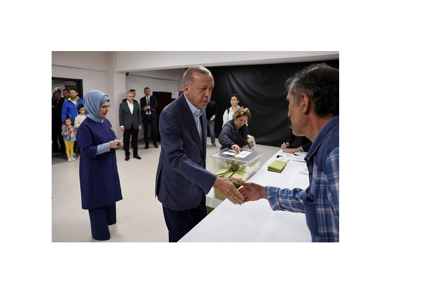

Internacional
Autor: José Ubilla
Con motivo del centenario de la República de Turquía, el presidente Recep Tayyip Erdogan, anunció que su Gobierno tenía grandes planes para el país. Quería enviar un astronauta turco a la Luna para subrayar el peso del gigante euroasiático en la esfera internacional, y anunció varios proyectos de construcción monumentales que pretendían dejar la huella de su paso por el poder. Sin embargo, otra cita histórica centra el debate social este año: las elecciones presidenciales y parlamentarias de este domingo. Turquía llega a esta votación lastrada por una grave crisis inflacionaria que alcanzó el 85% el pasado octubre y que sigue afectando a millones de ciudadanos. A eso se le añaden los efectos de los terribles terremotos que sufrió el país en febrero, que han causado más de 50.000 muertos y cerca de tres millones de desplazados internos. Y, tras una muy tensa campaña electoral, las elecciones de este domingo en Turquía transcurren sin incidentes, con gran afluencia de votantes y la esperanza, según señalan los sondeos, de que al país llegue un cambio que acabe con dos décadas de gobiernos del presidente Erdogan.
Erdogan, en el poder desde hace veinte años -como primer ministro desde 2002 y presidente desde 2014- está más cerca de perder que nunca. Las encuestas indican que el principal candidato opositor, el socialdemócrata Kemal Kiliçdaroglu, le saca entre cuatro y siete puntos en los sondeos. Si en la votación alguno de los candidatos supera el 50% de los votos se convertirá en el próximo presidente del país. De lo contrario, los dos candidatos con más votos se enfrentarán a una segunda vuelta el próximo 28 de mayo. Aparte de Erdogan y Kiliçdaroglu hay otros dos candidatos a presidente, que presentan menos del 5% de intención de voto en los sondeos: Muharrem Ince, un socialdemócrata que se ha retirado de la carrera electoral tras un escándalo sexual y Sinan Ogan, un candidato ultranacionalista que podría recoger el voto de descontento de los otros dos aspirantes.

Kiliçdaroglu presenta su candidatura respaldado por una coalición de seis partidos opositores, entre ellos formaciones de centro-izquierda, liberales, nacionalistas y exiliados de Erdogan. Durante su campaña han prometido democratizar las instituciones y apoyar las aspiraciones de las minorías y jóvenes del país. Por su parte, Erdogan ha ido perdiendo apoyo paulatinamente en los últimos diez años y ahora su base de votantes se perfila entre el 40 y el 45%. Esta mañana ha acudido a votar sobre las 11.00 horas, donde ha dicho que desea un "futuro provechoso" para el país. "Es importante que todos los votantes depositen su voto sin preocupaciones hasta las 17.00 horas (14.00 GMT) para mostrar la fuerza de la democracia turca", añadía. Sus electores recuerdan cómo impulsó económicamente el país tras una grave crisis en 2002 y cómo devolvió el orgullo y defendió la identidad de las clases populares más conservadoras, que sufrían discriminación por su condición religiosa. Su carisma y su carácter de líder fuerte en el terreno nacional e internacional han movido masas. A lo largo de sus legislaturas, Erdogan ha contado con el apoyo de un tejido de empresas, propietarias de la mayoría de medios de comunicación, que apoyan las hazañas del mandatario y critican constantemente a la oposición.
Para Oya Özarslan, directora en Turquía de Transparency Internacional, que monitorea posibles irregularidades en el proceso de voto, estas relaciones provocan un desajuste entre los partidos que se presentan a las elecciones y deja a la oposición en una posición de desigualdad. "Los partidos deberían tener las mismas oportunidades para poder llevar a cabo una carrera competitiva, pero en la práctica no es así. Erdogan usa los recursos del Estado para la campaña de su propio partido", señala. Özarslan pone como ejemplo la cobertura de los candidatos por parte del canal público TRT. Éste en el último mes ha emitido 32 horas de campaña electoral de Erdogan y 32 minutos de su principal contrincante, el socialdemócrata Kemal Kiliçdaroglu. En otra ocasión la noche del viernes. 40 canales de televisión cambiaron su programación de la noche para emitir una entrevista con el actual presidente. "Erdogan usa los recursos del Estado como si él fuera el Estado. Muchas veces organiza eventos como presidente y cuando acude la prensa, pone las banderas de su partido", añade, en alusión a la formación islamista AKP. Pese a esta diferencia de condiciones durante la campaña, parece que la oposición ha convencido a gran parte del electorado. En Turquía aún hay cerca de una decena de periódicos en papel y en línea críticos con el Gobierno, que han dado cobertura a la campaña opositora. Kiliçdaroglu por su parte, ha viralizado su mensaje en redes sociales mediante vídeos cortos desde su casa, con un tono cercano, dirigiéndose a todos los sectores de la sociedad. Uno de sus vídeos en el que reivindica ser miembro de la comunidad religiosa aleví, una minoría que ha sufrido décadas de discriminación y marginalización, alcanzó los 100 millones de visitas.
Por su parte, Erdogan y su partido han ido subiendo el tono de sus ataques contra la oposición durante la campaña. El ministro del Interior, Süleyman Soylu, declaró que estas elecciones son un "intento de golpe de Estado de Occidente" con su apoyo a la oposición. El ministro señaló que las personas LGBTI "quieren casarse con animales" y señaló que la oposición apoya a la comunidad homosexual. Erdogan también usó a la comunidad LGBTI para atacar en varias ocasiones a los candidatos opositores. Esta semana animó a sus seguidores a arriesgar su vida en estas elecciones como hicieron "en la noche del 15 de julio", en alusión al intento de golpe de Estado de 2016, en el que miles de seguidores de Erdogan salieron a la calle a defender su Gobierno. Sus declaraciones provocaron preocupación entre los partidos opositores, por la posibilidad de que Erdogan no acepte los resultados en caso de perder o intente movilizar a su base votante para protestar. Kemal Kiliçdaroglu ha pedido a sus votantes que no salgan a la calle si ganan para evitar posibles enfrentamientos contra "provocadores".